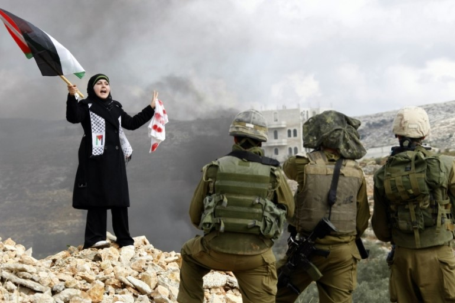

Genocide, Ethnic Cleansing, and Illegal Occupation: Why Palestine-Israel is not a “Conflict”.

The creation of a Jewish state in the middle of the Arab world not only represents the continuation of European colonialism in Palestine, it has also consisted of the ethnic cleansing of Palestinians and the establishment of an apartheid system by a rogue nation that has repeatedly violated international law. Given this reality, and the fact that Palestine is the Holy Land of three religions, the only just solution to the Zionist project of the Israeli state and its Western backers is the establishment of a single country: a democratic secular state of Palestine in which Jews, Arabs and Christians all have equal rights.
The Rise of the Zionist Movement
The Zionist Movement emerged in Europe in the late 19th-century and encouraged European Jews to escape anti-Semitism by migrating to Palestine, which was ruled by the Ottoman Turks at the time, with the goal of creating a Jewish state in the Holy Land. This migration saw the Jewish population in Palestine increase from 4% in 1850 to 11% in 1917. That same year, in 1917, the British Government’s Balfour Declaration stated: “His Majesty’s government view with favour the establishment in Palestine of a national home for the Jewish people, and will use their best endeavours to facilitate the achievement of this object.”
Following the defeat of the Ottoman Empire in World War I, the countries of the region were ruled by Britain and France under mandates from the League of Nations (predecessor of the United Nations). But World War Two brought about the downfall of the European Empires as colonies throughout the world gained independence. Accordingly, Lebanon (1943) and Syria (1946) gained independence from France while Jordan (1946) was liberated from British rule. The exception was Palestine, which had been ruled by Britain since 1922.
By all rights, Palestine, like its neighbours, should have become an independent nation following World War II, but the Western-backed Zionist project prevented this from happening. In accordance with the Balfour Declaration, Britain and the United States sought to ensure the creation of a Jewish state in Palestine. Under British rule, the Jewish population in Palestine had increased from 11% in 1922 to 32% in 1948, with many having arrived following the end of the war.
In 1947, the newly-established United Nations adopted the Partition Plan for Palestine without any consultation with the Palestinian people. The plan called for 56% of Palestine to become the Jewish state of Israel with 43% of the territory turned into a Palestinian state. Despite a large Arab majority in Palestine, Israel’s share of the territory was larger in order to accommodate the anticipated increased migration of European Jews. The remaining 1% of Palestine, consisting of the Holy City of Jerusalem, was to be an international territory administered by the United Nations.
Jewish groups supported the partition plan but Palestinians and the surrounding Arab states opposed it on the grounds that it violated the principles of national self-determination in the UN Charter under which Palestinians should have the right to decide their own destiny. The plan was not implemented. Nevertheless, the Jewish population in Palestine unilaterally announced the creation of the state of Israel on May 14, 1948.
The New European Colonialism
By the end of 1949, according to Israeli historian Ilan Pappe, Israel had destroyed more than 400 Palestinian villages, massacred thousands of civilians and forcibly displaced almost a million Palestinians, who ended up in refugee camps in neighbouring Arab countries. In other words, with the Jewish people having just endured the horrors of the Holocaust, the Zionists were now carrying out, according to Pappe, the ethnic cleansing of the Palestinian people.
This process of ethnic cleansing allowed Israel to expand and encompass 77% of Palestinian territory, all but East Jerusalem, the West Bank and Gaza. Over the next three years, 700,000 Jews immigrated to Israel, mostly from Europe. This Jewish colonization of Palestine represented a continuation of European colonialism as the wielding of power over the Palestinian people shifted from the British Government to European Jews in the form of the new Israeli State.
Following the 1967 war with several Arab states (Syria, Jordan and Egypt), Israel militarily occupied the remaining 23% of Palestine (East Jerusalem, the West Bank and Gaza). The UN Security Council responded by passing Resolution 242 demanding the “Withdrawal of Israel armed forces from territories occupied in the recent conflict.” The United States has since used its veto power in the Security Council on 41 occasions to ensure that the numerous UN resolutions condemning Israel’s illegal occupation have never been enforced.
It was not until after the Palestinians were forced to exist under Israel’s illegal military occupation following the 1967 war that the Palestinian Liberation Organization (PLO) decided to make armed struggle the centrepiece of its campaign to achieve a Palestinian State. And it was not until after 20 years of enduring an oppressive military occupation and the unwillingness of the international community to enforce UN resolutions that sectors of Palestinian society became increasingly radicalized and the Islamic group Hamas was formed. Hamas began using suicide bombing as a tactic in the early 1990s because it could not combat the vastly superior US-backed Israeli military through conventional warfare. Beginning in 2001, it also began launching primitive and inaccurate rockets into Israel from its Gaza strongholds.
Even though Israel withdrew its military from Gaza in 2005, it implemented a military blockade of the tiny territory the following year through which it strictly controls all access of people, food, medicines and other materials. Some analysts claim that Israel’s ongoing blockade of Gaza’s 1.8 million inhabitants has created the world’s largest prison camp.
Meanwhile, Israel has not only continued its illegal occupation of the West Bank and East Jerusalem, it has further violated international law by forcibly displacing Palestinian communities and encouraging Jews to move into the Occupied Territories. It is now estimated that almost half a million Jews live in illegal settlements in the West Bank and East Jerusalem despite UN resolutions demanding that they be dismantled.
Israel has also constructed a giant wall known as the separation barrier throughout the West Bank in order to segregate the illegal settlements from Palestinian communities and to restrict the movement of Palestinians. Meanwhile, in addition to establishing the illegal settlements, Israel has also constructed industrial zones in the West Bank in which Palestinian labourers are forced to endure low wages and poor working conditions.
The flagrant discrepancy in rights afforded to the Jewish settlers in comparison to Palestinians living in the Occupied Territories constitutes a system of apartheid. In fact, as John Dugard, a South African human rights lawyer and former UN Special Rapporteur, has noted, “I have no hesitation in saying that Israel’s crimes are infinitely worse than those committed by the apartheid regime of South Africa.”
In 1947, the year before Israel declared itself a sovereign state, Palestinians lived in 94 percent of Palestine. Today, they inhabit a mere 15 percent with some five million living in refugee camps in the West Bank and surrounding countries. The population densities in Palestinian refugee camps are among the highest of any place on earth. For example, more than 10,000 refugees live in the one square kilometre al-Amari camp in the West Bank, which amounts to five times the population density of New York City. As one third-generation refugee in the al-Amari camp told me, “We have a dream to return to our lands. How long it will take and what generation it will be, we don’t know.”
The disproportionate number of Palestinians killed in the long-running conflict is a reality hidden from many in the West. Over the past 15 years, according to the Israeli human rights organization B’Tselem, 8,701 Palestinians have been killed by Israelis compared to 1,138 Israelis killed by Palestinians. The disparity in the number of Palestinian children killed is even greater with a total of 1,772 killed during that period compared to 93 Israeli children.
Given this history, the repeated claim made by the United States and other Western nations that Israel’s military actions are merely acts of self-defence contradicts the reality on the ground. Surely it is the violence carried out by people forced to live under a violent illegal military occupation and blockade that should be considered an act of self-defence. After all, the French Resistance to the Nazi occupation of France during World War Two is viewed as a heroic struggle for national liberation. In stark contrast, Palestinian resisters are labelled ‘terrorists.’
Despite the best efforts of the United States and other Western governments as well as the mainstream media to portray Israel as the victim in this conflict, the numbers make evident who is doing most of the killing and who is doing most of the dying. The fact that a people forced to live under an illegal foreign military occupation are portrayed as the aggressors constitutes a stunning example of Orwellian doublespeak.
Collaborating with the Colonizers
This violent expansion of Israeli control over all of Palestine fulfils the European Zionist dream initiated in the late 19th century. Sadly, over the past couple of decades, some Palestinian leaders have been complicit in the Zionist project. The Oslo peace process during the 1990s saw the PLO recognize the state of Israel and in return Israel permitted the Palestinians limited self-governance in parts of the West Bank and Gaza. However, the so-called peace process postponed addressing the crucial issue of ‘the right of return’ for Palestinian refugees.
The first Palestinian parliamentary elections under the Oslo Accords were held in 1996 and were won by Fatah, the PLO’s political party, which then headed the new Palestinian Authority government. The Palestinian Authority began receiving significant aid from Western governments. In return, the Palestinian Authority has policed the Palestinian population on Israel’s behalf in the areas of the Occupied Territories that it governs. In other words, in the same way that Indian administrators and police oversaw the day-to-day governing of colonial India on behalf of the British colonizers, the Palestinian Authority has served the Israeli colonizers of the Occupied Territories in return for Western aid and a reduced Israeli military presence.
The infusion of foreign aid, especially funding from the United States Agency for International Development (USAID), is intended to achieve ‘economic peace’ by allowing sectors of the Palestinian population to attain a certain material comfort without challenging the ongoing Israeli occupation and the continued expansion of Jewish settlements in the West Bank and East Jerusalem, which violate both the Oslo Accords and international law. In reference to the long-running, oft-stalled peace talks, former UN Special Rapporteur Dugard recently stated, “I think the strategy of Israel and also of the United States is simply to allow talks to go on forever and ever, while Israel annexes more land and takes over Palestinian territory.”
Meanwhile, the economic model emerging in the West Bank is not sustainable because it is almost entirely dependent on foreign aid and international NGOs. Furthermore, the benefits from the economic model are largely restricted to Ramallah, the seat of the Palestinian Authority government, creating what is known in the West Bank as the ‘Ramallah bubble.’ As Dr. Hanan Chehata, a professor of law and former correspondent for the Middle East Monitor, explains,
… while those in Ramallah may currently travel throughout that small city relatively unimpeded, Palestinians in the rest of the region are subjected to daily humiliation at Israeli road blocks and military checkpoints; they also have to endure indiscriminate arrests and unjustified interrogations leading frequently to torture and sometimes to death. While the residents of Ramallah can go to work in the day reasonably secure in the knowledge that they will return home in the evening to a hot meal and well-rested family members, other Palestinians leave their homes not knowing if their houses will still be standing when they return or if they will have been demolished by Israeli Caterpillar bulldozers in order to make room for new Israeli settlements.
In other words, if the Palestinian Authority and its supporters cooperate with the Israeli colonizers they will receive economic rewards and be spared the excessive brutality wielded by the Israeli military. But those who insist on actively resisting the colonizers will bear the full force of Israeli aggression. Not surprisingly, in the eyes of many Palestinians, the Palestinian Authority has sold out to the colonizers by colluding with Israel and the United States to achieve ‘economic peace’ at the expense of national liberation.
The growing discontent with the Palestinian Authority became evident in the 2006 general elections when Fatah was handily defeated by Hamas. Following the election, Fatah refused to hand over power in the West Bank and, with the support of Israel and Western nations, has continued to rule for the past nine years as an un-elected government—while Hamas has governed Gaza.
The one place that elections have been allowed to take place is in universities and these are seen as a barometer that reflects the political views of the broader Palestinian population. In the student council elections at Birzeit University in Ramallah last month, the Hamas-affiliated Islamic Wafaa’ Bloc defeated Fatah’s student party, winning a majority of the seats. Nadine Suleiman, a fourth-year public administration student, explained why she voted for Hamas: “I detest the corruption of the PA [Palestinian Authority], their security coordination with Israel which involves arresting and killing Palestinians who are on Israel’s wanted list while Palestinians get nothing in return. The PA is only interested in keeping its wealth and privilege.”
The Palestinian Authority’s US-funded security forces quickly responded to the Birzeit University election results by arresting four students belonging to the winning party and then interrogating and beating them. In total, 25 students throughout the West Bank were arrested and scheduled elections in An-Najah National University and Hebron University were postponed. According to Human Rights Watch, “It is deeply worrying that students are being held by Palestinian forces for no apparent reason other than their connection to Hamas or their opinions.”
So while on the international front the Palestinian Authority has challenged Israel by gaining membership in the International Criminal Court (ICC), on the ground in the West Bank it regularly arrests, interrogates, imprisons and tortures Palestinians who are viewed as sympathetic to Hamas or who aggressively challenge the Israeli occupation in their quest for liberation. As a result of its failure to call new elections, its corruption with regard to handling foreign aid and its collusion with the illegal Israeli occupation, many Palestinians no longer view the Palestinian Authority government as legitimate.
In contrast, Hamas is seen by many Palestinians as actively resisting Israel, and it is this perception—and its relative lack of corruption—that lies at the root of its popular support. This resistance has also led Israel to launch three large-scale military assaults against Gaza during the past seven years (2008, 2012 and 2014). According to the United Nations, the Israeli military’s seven-week invasion of Gaza last year resulted in the deaths of 2,025 Palestinians, including 1,483 civilians, of whom 521 were children. Meanwhile, 71 Israelis died, of which 66 were soldiers. Additionally, more than half a million Palestinians were forcibly displaced from their homes by the assault.
The One-State Solution
The Palestinian Authority has accepted the two-state solution proposed as part of the Oslo peace process. The basic idea being that the West Bank and Gaza would constitute a Palestinian state (only 23% of Palestine) with the remainder being Israel. But the Palestinian Authority’s support for a two-state solution is at odds with the wishes of the majority of Palestinians. In a poll conducted last year, 60% of Palestinians believed in a one-state solution while only 27% supported the two-state option.
The two-state solution constantly being touted by the United States and other Western nations, and backed by the Palestinian Authority, is completely out of touch with the reality in the West Bank and East Jerusalem. According to Tariq Dana, a professor at Birzeit University in Ramallah, “A two-state solution is not possible. It is not viable given the reality on the ground.”
The reality that Dana is referring to is the constantly expanding illegal Jewish settlements that are now home to almost half a million Jews. The settlements now cover more than 40% of the West Bank, dominating the best agricultural land and access to the region’s principal water supply. As Daniella Weiss, a Zionist former mayor of a Jewish settlement in the West Bank, admitted a few years ago, “I think the settlements prevent the establishment of a Palestinian state in the land of Israel. This is the goal. And this is the reality.” Clearly, any two-state solution that creates a viable Palestinian state would require the dismantling of these settlements and removal of the settlers from what the Zionists consider to be their Holy Land.
Far from dismantling the settlements, Israel’s policies are further entrenching them. With its building of the separation barrier, the Israeli government is seeking to annex the settlements into the state of Israel, which would leave the Palestinians with three small, unconnected chunks of arid and rocky land that lack access to essential water supplies. Such an outcome would not constitute a viable Palestinian state.
Many Palestinians support the establishment of a single state of Palestine in which Arabs and Jews would have equal rights. The Popular Front for the Liberation of Palestine (PFLP), the second largest member of the PLO after Fatah and a terrorist group in the eyes of the United States, Canada and the European Union because it advocates armed struggle, is opposed both to the Palestinian Authority government and the two-state solution. According to the PFLP,
“The Palestinian liberation movement is not a racial movement with aggressive intentions against the Jews. It is not directed against the Jews. … The aim of the Palestinian liberation movement is to establish a democratic national state in Palestine in which both Arabs and Jews will live as citizens with equal rights and obligations and which will constitute an integral part of the progressive democratic Arab national presence living peacefully with all forces of progress in the world.”
Hamas also sees the one-state solution as the only answer, albeit an Islamic state in which the rights of Jews are protected. But creating an Islamic Palestine would simply replace one religious state (Israel) with another. Given that Palestine is the Holy Land of three religions (Islam, Judaism and Christianity) and the fact that a significant portion of the Palestinian population supports a secular state, the solution to this seemingly intractable conflict could be the replacement of a Zionist state with a secular democratic nation in which all citizens—Jewish, Christian and Muslim—have equal rights and responsibilities.
Conclusion
The establishment of a Zionist state in the middle of the Arab world for Jewish migrants from Europe was only possible due to the support of Western imperialist powers including the United States, Britain and Canada. And Israel’s existence and ongoing expansion of Jewish settlements in the West Bank and East Jerusalem constitutes the continuation of European colonialism into the 21st century at the expense of the Palestinian people who have lived there for two thousand years.
Given this reality, the Jewish state of Israel should be viewed as both illegitimate and yet another catastrophic consequence of Western imperialism. The only just solution to this entrenched conflict is to finally allow Palestinians to establish the independent state they should have attained following World War Two and to allow for the return of all refugees. In other words, a single, secular Palestinian state in which Jews, Christians and Muslims all share equal rights. Such a one-state solution is not anti-Semitic, it is sensible.